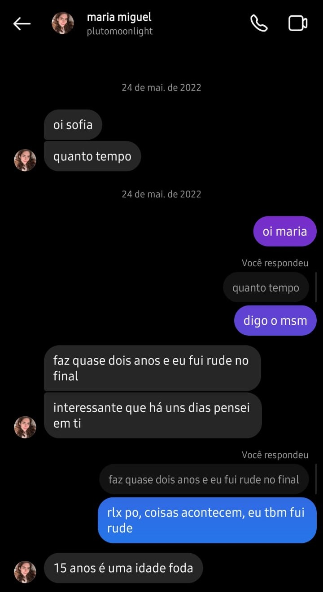

Acho justo começar falando como você viveu sem mim, se discordar me dá um beijo de castigo. Bom, assim que voltou para Portugal você saiu com suas amigas, fez novas amizades e viveu, até que no Natal desejou ter uma namorada, e não muito tempo depois ela apareceu, a Ana (sinto muito falar dela aqui, mas é só para a história ficar completa, se você não gostar eu tiro depois), e pouco tempo depois estava você aparentemente feliz no Twitter com sua namorada com o gosto musical perfeito. Mas nem tudo são flores, e aquilo foi péssimo, mas é difícil de sair de relações assim, é como algo que te prende e joga a chave fora, então levou tempo até você finalmente terminar de vez. Logo depois de terminarem você teve um crush na Raquel (justificável), porque ela foi de fato uma boa amiga, e você teve ajuda dela, do seu terapeuta, e de outras amizades. E assim, tudo isso, deixou você um passo mais perto de mim.
Agora sim é a minha vez de me queimar. Como você bem sabe eu te stalkeava todo santo dia, até começar a me sentir mal quando vi seu Twitter e seu Spotify com a playlist da Ana, e pensei que eu deveria só esquecer e viver minha vida. E foi o que aconteceu, logo depois disso eu conheci a Marina, e com um pequeno incentivo do Gabriel, ficamos, e isso durou uns 4 meses, até o fatídico fim dela com o João, que tinha acabado de terminar com a Sofia. Depois disso fiquei lélé da cuca, fiz coisas que apesar de me arrepender eu até faria de novo, dependendo da ocasião, mas enfim, eu falava de você o tempo todo para ela, já chamei ela pelo seu nome, então isso foi algo. Passei uns meses de boa até eu lembrar que a Sarah existia, eu conhecia ela há anos, mas nunca tinha parado para falar de fato, e não vou mentir, parecia uma boa vingança para Marina, porque elas eram da mesma escola, e a Sarah era meio popular por ser muito participativa em tudo, TUDO, então foi legal.
E tudo isso foi durante quase dois anos sem nos falar ou ter qualquer tipo de contato uma com a outra, mas nunca nos esquecemos, pelo contrário, viviamos nos stalkeando, mas sem coragem de fazer algo mais que isso. Até que nossa querida Sarah vê seu perfil no meu histórico e pergunta sobre, eu explico toda a história e digo que se eu pedisse para te seguir você provavelmente me bloquearia, e ela disse o famoso "dúvido", então pedi para te seguir sem expectativas. E foi quando você aceitou, e eu logo com uma pequena chama de epserança fui ver o Spotify e a playlist da Ana não estava mais lá, então você mandou isso aqui:
Você claramente mandou isso já com segunda intenções, no Brasil, se uma pessoa com uma ligação romântica com você manda mensagem depois de muito tempo, e a mensagem é algo do tipo "quanto tempo", essa pessoa quer te beijar de novo obviamente. Mas enfim, eu acho que nunca fiquei tão feliz recebendo uma mensagem, mas eu ainda tava com a Sarah, e foi questão de tempo até eu terminar com ela por você, eu sabia que iria fazer isso assim que mandou a mensagem, mas me sentia mal por fazer, por isso demorei.
Agora já estávamos em contato, e você viria para o Brasil, e eu sabia que eu ia te pedir em namoro assim que te visse, só esperei o primeiro beijo para não falarem q era web namoro. Planejei de forma bem simples, mas no dia eu não parava de pensar nisso, por isso eu fiquei calada praticamente o almoço todo. Chegamos na sua casa e você tava me mostrando alguma coisa, e então eu te beijei, e não, você nunca me beijaria primeiro. Naquele momento eu tava pensando muito, muito mesmo, em nada específico só em tudo, em como seus lábios eram macios e em como eu nunca mais queria parar de te beijar. E então foi isso.